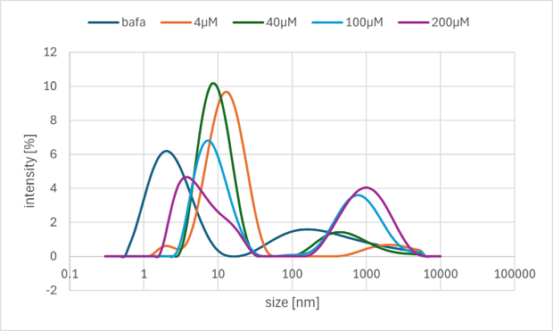

Overview
実証のために実験を行ったみたいな文章を適当に入れる
Experiment 1 Entropy Driven Circuit testing
Objective
To verify the amplification effect of the entropy-driven circuit.
Method
私たちは4つのcatalyst濃度の異なるサンプルを用意し、比較した。それぞれ、バッファーとして、Tris 10 mM、EDTA 1.0 mM、MgCl2 12.5mMの濃度で、catalyst濃度は50 nM、25 nM、10 nM、0 nMに調整した。各溶液にはSubstrateが20 nM、Fuelが1000 nMの濃度で入っている。
outputの存在を確認する手法として下の図のようなレポーター分子を用いた。outputが存在すると、レポーター分子に結合し、鎖置換反応を引き起こします。この反応の結果として、レポーター分子から蛍光を消す分子（BHQ）が離れ、蛍光分子（FAM）が解放されて発生する蛍光をリアルタイムPCRで計測した。
計測のサイクルは1分間に1回で80分間行い、温度は25℃に設定した。
Result
全体の傾向として(10nMと0nMのサンプルでは逆転が起きているが)、catalyst濃度が高いほどoutputの生成速度が速く、最終的なoutputの濃度も高くなっていることが確認された。
Discussion and Next Step
エントロピードリブン回路の増幅効果が確認された。ただし、蛍光強度による測定であり、最終的なoutputの濃度に関しては不透明であるため、濃度の測定については別途実験を行う。(実験6に対応するリンクを付けたい)
Experiment 2 DNA Hydrogel Formation testing
Objective
設計した配列でDNAハイドロゲルが形成されることを確認すること。
Method
バッファー溶液として、下の表にしめすようにMgCl2の入ったもの(Buffer#1)と、NaClの入ったもの(Buffer#2)の2種類を用意した。
Table 2a. Buffer#1 Recipe

Table 2b. Buffer#2 Recipe

DesignのAppendixに示したDNAハイドロゲルの各配列の濃度が400μM、全体として溶液が20μLになるように4つのDNA溶液とバッファー溶液、純水を混合して冷蔵庫に放置した後、ゲルができるかどうかを確認した。
また、同じ溶液に対して、95℃(5分)、その後1分ごとに-1℃で4℃まで温度を下げるアニーリングを行った。
Table 2c. Solution Recipe

Result
2種類の溶液を冷蔵庫から取り出して、ピペットで触って感触を確かめたところ、どちらも定性的にはゲル化している様子は確認されなかった。
また、アニーリング後の溶液についてもピペットで触って感触を確かめたところ、どちらも定性的にはゲル化している様子は確認されなかった。
そこで、アニーリング後の溶液を顕微鏡で観察したが、特に凝集体などは確認されなかった。
Discussion and Next Step
混合溶液はゲル化せずに液体のままであったが、マクロな観察だけではミクロな結合状態が不明である。そこで、次の手段として電気泳動を用いた分子レベルの測定を行う。また、本実験では2種類の塩のバッファーに対して各1つの濃度でしか測定を行っていないため、濃度を変えてゲルが形成されるかを確認する。
Experiment 3 Polyacrylamide Gel Electrophoresis (PAGE)
Objective
DNA配列が溶液中で設計通りの二本鎖や高次集合体を形成しているか、分子レベルで確認し、ゲル化をしなかった原因を特定すること。
Experiment 4 Agarose Gel Electrophoresis
Objective
後で追加する
Experiment 5 Dynamic Light Scattering (DLS) Buffer Optimization
Objective
バッファーの塩濃度を変更して、ゲルの形成に適切なバッファーの塩濃度を決定すること。
Method
我々は以下の条件でバッファーの塩濃度が異なる10種類のサンプルを各20 μL調製した。
#A Group（Buffer salt is NaCl, n=5）
- DNA sequences of gel motifs (4 types): Each 400 μM
- Buffer: 100 mM Tris, 10 mM EDTA
NaCl concentration is as shown in Table 5A.a (A1-A5).
#B Group（Buffer salt is MgCl2, n=5）
- DNA sequences of gel motifs (4 types): Each 400 μM
- Buffer: 100 mM Tris, 10 mM EDTA
MgCl2 concentration is as shown in Table 5A.b (B1-B5)
サンプルを調製した後、95℃(5分)、その後1分ごとに-1℃で4℃まで温度を下げるアニーリングを行い、それぞれのサンプルごとにDLSを用いて粒子の大きさの分布を測定した。
Result
グラフの1000 nm から10000 nm の間にピークが確認された。また、NaCl塩のA群では濃度を変化させても、μオーダーのピーク強度は大きな変化は確認できなかった。一方、MgCl2塩のB群では塩濃度を大きくするとμオーダーのピーク強度は小さくなっていることが確認された。
また、全体として塩の種類 (Na と Mg) を変えても、特有のピークの出現位置や全体の傾向に顕著な差異は確認されなかった。
Discussion and Next Step
本実験でDLS測定を行った結果、1000 nm から 10000 nm の間にピークが確認されたことから、数 μ から数十 μ オーダーの構造物が形成されていると予想される。結果を踏まえて、本プロジェクトではバッファーの塩をMgCl2にして、濃度は12.5mMで使用することに決定した。これは、この実験では低濃度帯であればピークの出現位置や強度に顕著な差異は確認されず、かつ12.5 mM がエントロピードリブン回路の最適動作条件に相当するためである。
この次には、今回の実験では測定できなかった、DNA濃度を変更したときのサイズ分布の評価をDLSを用いて行う。
Experiment 6 DLS DNA Concentration Evaluation
Objective
ハイドロゲルモチーフのDNA濃度を変更し、DLSを用いて粒子サイズ分布の評価をすること。
Method
我々は以下のTable 6aに示すようにDNA濃度が異なる5種類のサンプルを調製した。測定用のサンプルは、基本的に 20 μLとなるように調製したが、200 μMのサンプルのみ15.6 μLで調製した。
アニーリング途中でやめたとことかの書き方は検討
そして、それぞれのサンプルごとにDLSを用いて粒子の大きさの分布を測定した。DLSの測定には、Malvern Panalytical社のZetasizer Ultra Red Label を使用し、測定温度は 25℃、測定時間は auto設定で行った。
Table 6a. Sample Recipe

Result

図より、濃度が40 μM以下の低濃度域ではμmオーダーのピークが確認されないもしくは強度が小さいことが確認された。
Discussion and Next Step
DNA濃度が小さいときにはμMオーダーでの構造物は形成されていないことが確認され、本プロジェクトで設計した配列では数百μM程度の濃度が必要であると考えられる。
思ったよりも高い濃度必要だから配列設計の部分から見直さないとみたいなことを書くか書かないか。
Experiment 7 Entropy Driven Circuit Output Concentration measurement
Objective
エントロピードリブン回路によって生成されるoutputの濃度を定量的に計測すること。
Method
我々は以下の条件で10種類のサンプルを調製した。
#A Group（Different in Catalyst Concentration, n=6）
- Substrate: 300 nM
- Fuel: 390 nM
- Reporter: 900 nM
- Buffer: 12.5 nM (MgCl2)
- Catalyst: 濃度をTable 6.aに示す通りに変化（A1-A6）
#B Group（Different in Output Concentration, n=4）
- Reporter: 900 nM
- Buffer: 12.5 nM (MgCl2)
- Output: 濃度をTable 6.bに示す通りに変化（B1-B4）
レポーターはFig.1aに示すものである。蛍光測定は実験1と同様にリアルタイムPCRを用いて行った。測定条件は25℃、1分間隔で200分間とした。
Table 7a. Catalyst Concentration

Table 7b. Output Concentration

Result
後で追加する